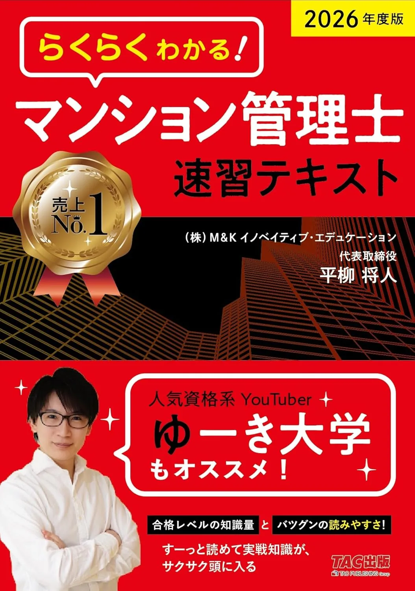
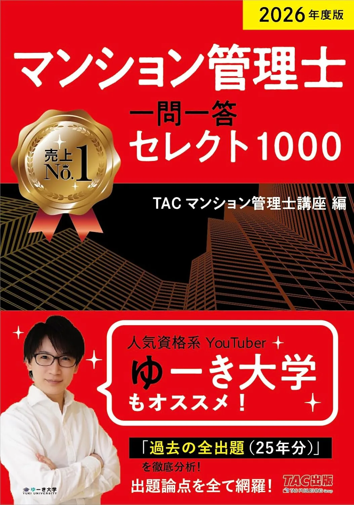
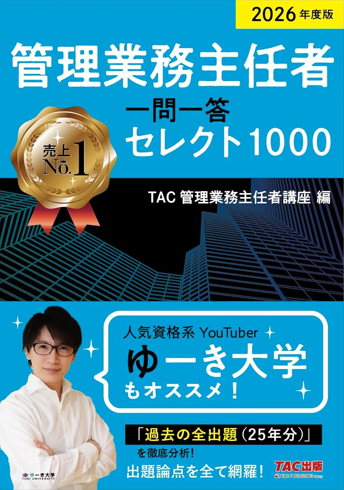

マンション管理士の一問一答・速習3選【セレクト1000・管理業務主任者2026】
一問一答·速習は、テキスト·問題集のあとに置く補助教材です。本番は11/29（日）13:00〜15:00・7分野50問・120分。執筆時点（2026-06-12）のAmazon税込参考は、速習テキスト3,190円・マン管セレクト1000 2,200円・管業セレクト1000 2,200円。購入前に各販売ページで最新の価格·在庫·版を確認してください。
この記事の信頼性について
| 執筆 | マン管マスター編集部（資格学習サイトの編集チーム） |
|---|---|
| 確認 | 公式情報確認担当（公開前に一次情報との照合を行う担当者） |
| 事実確認日 | 2026-06-12 |
| 主な参照元 |
1速習・一問一答は50問120分の補助
速習テキストと一問一答は、7分野50問120分の本番形式を置き換える教材ではありません。条文理解のあと、スキマ時間で論点確認·短問反復に使う位置づけです。購入前に次の3点を確認してください。
| 観点 | 確認内容 |
|---|---|
| 役割 | メインテキスト·問題集の第2周·穴埋めか |
| 時間 | 通勤30分×1日10問が続くか |
| 受験区分 | W受験なら管業セレクト要否 |
たとえば8月末時点でテキストが60％未満なら、速習·一問一答よりテキスト完走を優先してください。48％未満分野がまだ多い段階での一問一答追加は、演習量だけ増えて定着しにくいことがあります。
一問一答・速習3選（比較）
価格は執筆時点（2026-06-12）のAmazon税込参考です。受験区分は公益財団法人マンション管理センター（公式）で必ず確認してください。
| 順位 | 商品名 | 価格（税込参考） | ページ数 | 向いている人 |
|---|---|---|---|---|
| 1 | 2026年度版 らくらくわかる! マンション管理士速習テキスト | ¥3,190 | 900 | テキスト読了前後に速習で論点を整理したい人 |
| 2 | 2026年度版 マンション管理士 一問一答セレクト1000 | ¥2,200 | 560 | マン管単独受験で短問演習量を確保したい人 |
| 3 | 2026年度版 管理業務主任者 一問一答セレクト1000 | ¥2,200 | 516 | 管理業務主任者区分の短問演習を追加したいW受験者 |

2026年度版 らくらくわかる! マンション管理士速習テキスト
- 速習形式で3分野を短期復習
- TAC過去8年・一問一答への橋渡しに向く
- 社会人のスキマ時間学習と相性がよい

2026年度版 マンション管理士 一問一答セレクト1000
- セレクト1000問で演習効率を上げやすい
- 項目別過去8年問題集との併用向き
- 直前期の穴埋め演習にも使える

2026年度版 管理業務主任者 一問一答セレクト1000
- 管理業務主任者向けセレクト1000問
- マン管一問一答とセットでW受験対策
- Wマスターシリーズとの章立て相性がよい
23冊の用途：通勤30分×5日の当て方
3冊はすべてTAC系ですが、役割が異なります。
| 商品 | 主な用途 | 向く時期 |
|---|---|---|
| 速習テキスト | 論点の短期整理 | 6〜7月·テキスト並行 |
| マン管セレクト1000 | マン管短問演習 | 8〜10月 |
| 管業セレクト1000 | W受験の管業短問 | 9月以降（Wのみ） |
通勤30分×平日5日＝週150分なら、マン管セレクトで短問10問/日×5日が現実的な上限です。おすすめテキスト3選·おすすめ問題集3選で主教材を決めてから、足りない演習形式だけを1冊追加する判断がコスト対効果が高いです。
31位：速習テキスト（6〜7月の橋渡し90分）
「2026年度版 らくらくわかる! マンション管理士速習テキスト」（TAC出版·900ページ·Amazon税込参考3,190円）は、テキスト読了前後に7分野の論点を速習形式で整理したい人向けです。解説がコンパクトで、社会人の平日90分学習と相性がよいのが強みです。向いている人：はじめの一歩読了後、本格テキストへ進む前の橋渡しが欲しい人。たとえば7/5（土）〜8/2（土）の4週で「週末90分×速習2章→平日演習10問」を固定する運用が定番です。注意点：50問通しの時間練習は担えないため、9月以降はおすすめ問題集3選の通し演習を別途入れてください。速習だけで合格を狙うのではなく、第1周の理解確認用と割り切ることが重要です。
42位：マン管セレクト1000（短問10問/日）
「2026年度版 マンション管理士 一問一答セレクト1000」（TAC出版·560ページ·Amazon税込参考2,200円）は、マン管単独·W受験いずれでも使える短問演習集です。厳選1000問形式で、弱点分野の穴埋めに向きます。向いている人：テキスト第1周後、通勤時間で反復したい人、TAC過去8年問題集と併用して項目別演習を厚くしたい人。具体例として9/8（月）〜9/12（金）の平日、毎朝30分で短問10問→3日後に誤答だけ解き直し、が1週間の最小ループです。48％未満が続く分野は、短問だけ増やさず該当章をテキストで読み直してから再開してください。
53位：管業セレクト1000（W受験の追加短問）
「2026年度版 管理業務主任者 一問一答セレクト1000」（TAC出版·516ページ·Amazon税込参考2,200円）は、W受験で管業区分の短問演習を追加したい人向けです。マン管セレクト1000と章立ての相性がよく、Wマスターシリーズ利用者に向きます。向いている人：マン管パートは進んでいるが管業パートの演習量が不足しているW受験者。マン管単独受験なら購入不要です。
- 別冊の管業過去8年（ASIN 4300120285）も選択肢ですが
- まずはセレクト1000で短問反復→必要なら過去問追加
- の順がコストを抑えやすいです
2冊同時に開かず、週ごとにマン管·管業の主役を切り替えてください。
6W受験：4段階の教材順番
W受験の教材順番の定番は次の4段階です。
| 段 | 教材 |
|---|---|
| 1 | はじめの一歩またはWマスターテキスト |
| 2 | おすすめ問題集3選の過去問1冊 |
| 3 | マン管セレクト1000（+必要なら管業セレクト） |
| 4 | 11月の通し50問×2回 |
一例として6/14（日）テキスト決定→8/31（日）第1周→9/7（日）過去問開始→10/6（月）からマン管セレクト10問/日、W受験なら10/20（月）から管業セレクト追加、の流れです。速習テキストは段1と並行で7月だけ使い、8月以降は問題集·セレクトに役割を移すと迷いが減ります。
7購入前：80％ルールと25週計画
一問一答·速習は「メインテキスト80％読了後」に1冊だけ追加する80％ルールが安全です。
- 6/14開始·残り25週なら
- 7〜8月はテキスト·速習
- 9月以降セレクト
- 10〜11月通し50問
- の大枠を初学者向け学習計画で先に固定してください
テキスト·問題集が未決なら、おすすめテキスト3選とおすすめ問題集3選で先に1冊ずつ決めてから一問一答を選ぶと無駄がありません。購入前チェック：Amazonで税込価格·2026年度版表記·受験区分。11月以降の新規教材追加は抑え、解き直しに週10時間の50％以上を回す判断が定番です。価格は変動するため、購入直前に必ず販売ページで再確認してください。
8よくある質問
一問一答だけで合格できますか？
管理業務主任者向け過去問は別途必要ですか？
速習と一問一答、両方買いますか？
記事の基本情報
| ジャンル | 過去問活用 |
|---|---|
| タグ | 独学 / 参考書 |
公式情報の確認
公式情報の確認：マンション管理士試験の最新情報は、公益財団法人マンション管理センター（公式）などの公式情報を必ず確認してください。本人に割り当てられた試験会場は受験票の表記が正本です。